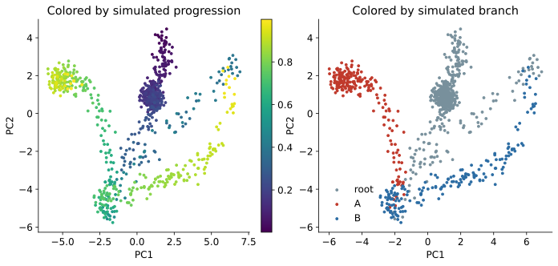
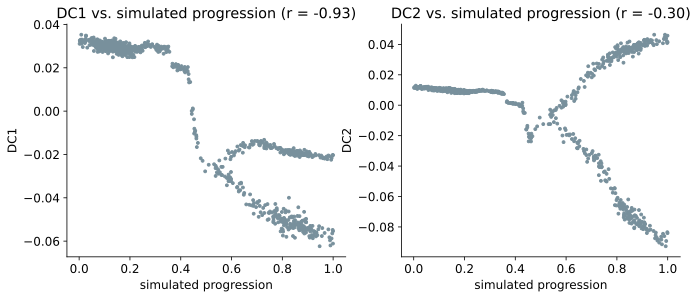
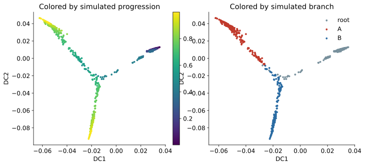
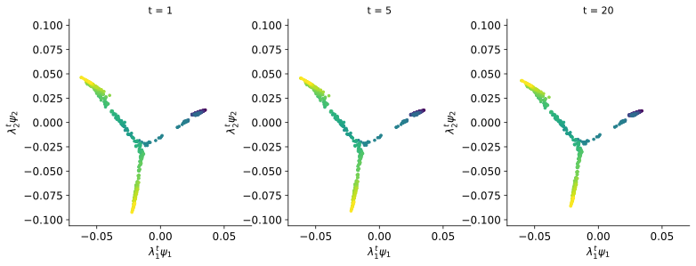
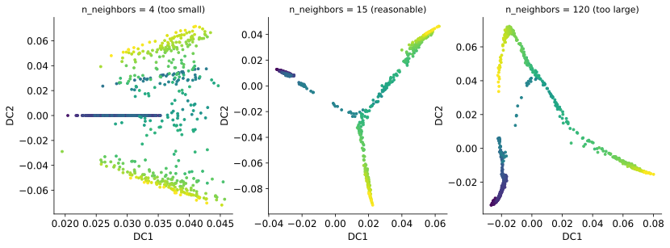
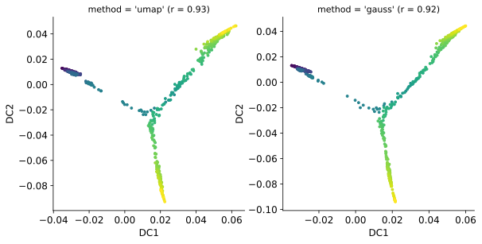
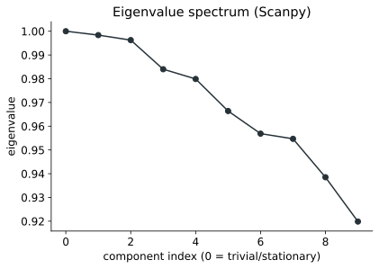

2 Diffusion maps in R and Python
The examples use destiny in R and Scanpy in Python with the same observations, features, and neighbor count. The packages construct their graphs differently, so their numerical results differ slightly.
2.1 Simulated data
The dataset contains 900 simulated observations. Progression runs from 0 to 1 and divides into two branches after its midpoint. The data have 30 variables related to this structure and 10 unrelated noise variables.
Four additional columns record the known simulation variables:
true_pseudotimetrue_branchtrue_latent_xtrue_latent_y
These columns are used to assess the results. They are not included when fitting the diffusion map.
df <- read.csv(
"data/diffusion_maps_simulation.csv",
stringsAsFactors = FALSE
)
feature_cols <- c(
grep("^x", colnames(df), value = TRUE),
grep("^nuisance", colnames(df), value = TRUE)
)
dim(df)
length(feature_cols)[1] 900 45
[1] 40import numpy as np
import pandas as pd
df = pd.read_csv("data/diffusion_maps_simulation.csv")
feature_cols = [
c for c in df.columns
if c.startswith("x") or c.startswith("nuisance")
]
df.shape
len(feature_cols)(900, 45)
40Each feature is standardized before the graph is constructed.
X <- scale(as.matrix(df[, feature_cols]))from sklearn.preprocessing import StandardScaler
X = StandardScaler().fit_transform(df[feature_cols].to_numpy())2.2 PCA comparison
A PCA fit provides a linear comparison.
pca <- prcomp(X, center = FALSE, scale. = FALSE)
summary(pca)$importance[2, 1:2]
cor(pca$x[, 1], df$true_pseudotime)
cor(pca$x[, 2], df$true_pseudotime) PC1 PC2
0.2130 0.1380
[1] 0.431
[1] -0.369from sklearn.decomposition import PCA
pca = PCA(n_components=2).fit(X)
pcs = pca.transform(X)
pca.explained_variance_ratio_
np.corrcoef(pcs[:, 0], df["true_pseudotime"])[0, 1]
np.corrcoef(pcs[:, 1], df["true_pseudotime"])[0, 1]array([0.213, 0.138])
-0.431
-0.369The sign of a component is arbitrary, so the correlations are compared by magnitude. PC1 and PC2 together account for about 35% of the variance. Neither component follows progression closely.

The fork is partly visible, but progression is not represented by a clear PCA axis. A diffusion map instead uses the neighborhood graph.
2.3 Fit a diffusion map
The corresponding settings have different names in the two packages.
| Purpose | destiny |
Scanpy |
|---|---|---|
| Number of neighbors | k |
n_neighbors |
| Kernel | sigma |
method in sc.pp.neighbors() |
| Number of returned components | n_eigs |
n_comps |
| Diffusion coordinates | eigenvectors(dm) |
adata.obsm["X_diffmap"] |
| Eigenvalues | eigenvalues(dm) |
adata.uns["diffmap_evals"] |
destiny constructs the graph and computes the diffusion map in one call. Scanpy constructs the neighbor graph first and then computes the diffusion map.
library(destiny)
set.seed(1)
dm <- DiffusionMap(X, k = 15, n_eigs = 10)
round(eigenvalues(dm)[1:8], 4) DC1 DC2 DC3 DC4 DC5 DC6 DC7 DC8
0.9982 0.9956 0.9811 0.9759 0.9596 0.9469 0.9428 0.9242import anndata as ad
import scanpy as sc
adata = ad.AnnData(X=X.astype("float32"))
sc.pp.neighbors(adata, n_neighbors=15, use_rep="X")
sc.tl.diffmap(adata, n_comps=10)
adata.uns["diffmap_evals"][:8].round(4)array([1. , 0.9984, 0.9963, 0.984 , 0.9799, 0.9664, 0.9569, 0.9547])There is one indexing difference. Scanpy stores the stationary component in column 0. It has eigenvalue 1 and does not separate observations. Scanpy’s DC1 is therefore column 1. destiny omits this component from eigenvectors(dm), so its DC1 is column 1 in R indexing.
Both packages return eigenvectors and eigenvalues separately. The eigenvector columns are the component patterns described in Chapter 1. These outputs can also be combined to form coordinates at a chosen diffusion time.
2.4 Inspect the first components
The first two components can be compared with the known progression variable.
dc_r <- eigenvectors(dm)
cor(dc_r[, 1], df$true_pseudotime)
cor(dc_r[, 2], df$true_pseudotime)[1] 0.9318
[1] -0.2659dc1_py <- adata.obsm["X_diffmap"][:, 1]
dc2_py <- adata.obsm["X_diffmap"][:, 2]
np.corrcoef(dc1_py, df["true_pseudotime"])[0, 1]
np.corrcoef(dc2_py, df["true_pseudotime"])[0, 1]-0.9260
-0.2989DC1 follows progression in both results. Its sign differs because an eigenvector can be multiplied by negative one without changing the geometry. The absolute correlation between the two DC1 vectors is 0.998.
Compare component signs only after aligning their orientation. An opposite sign does not indicate a different embedding.


DC1 follows progression and DC2 separates the branches in this simulation. This ordering is specific to this graph. A different dataset can place branch structure or another persistent pattern first.
2.5 Using a fixed diffusion time
destiny and Scanpy return eigenvectors and eigenvalues without requiring a fixed diffusion time. They can be used to construct coordinates at any \(t\):
\[\mathrm{DC}_k^{(t)} = \lambda_k^t\psi_k.\]
Diffusion time explains \(P^t\), diffusion distance, the persistence of graph patterns, and the faster decay of components with smaller eigenvalues. It does not need to be tuned in every analysis.
A fixed \(t>1\) is most relevant when the analysis needs diffusion geometry at a particular propagation scale. Changing \(t\) changes Euclidean distances in the weighted coordinates because each component receives a different weight. Those distances may then be used for clustering, neighbor calculations, or another geometric analysis.
The example below uses \(t=1\), \(t=5\), and \(t=20\). It reports the ranges of DC1 and DC2 and the distance between an early observation and a terminal observation. The distance uses the first nine nonstationary components.
evals_r <- eigenvalues(dm)
psi_r <- dc_r[, 1:9]
pair_r <- c(
which.min(df$true_pseudotime),
which.max(df$true_pseudotime)
)
for (t in c(1, 5, 20)) {
coords_t <- sweep(
psi_r,
2,
evals_r[1:9]^t,
"*"
)
span <- apply(coords_t[, 1:2], 2, function(v) diff(range(v)))
pair_distance <- sqrt(sum(
(coords_t[pair_r[1], ] - coords_t[pair_r[2], ])^2
))
cat(sprintf(
"t=%2d DC1 range=%.4f DC2 range=%.4f pair distance=%.4f\n",
t, span[1], span[2], pair_distance
))
}t= 1 DC1 range=0.0936 DC2 range=0.1395 pair distance=0.1926
t= 5 DC1 range=0.0929 DC2 range=0.1371 pair distance=0.1563
t=20 DC1 range=0.0905 DC2 range=0.1282 pair distance=0.1013evals_py = adata.uns["diffmap_evals"]
psi_py = adata.obsm["X_diffmap"][:, 1:10]
pair_py = [
int(df["true_pseudotime"].idxmin()),
int(df["true_pseudotime"].idxmax()),
]
for t in (1, 5, 20):
coords_t = psi_py * (evals_py[1:10] ** t)[None, :]
span = coords_t[:, :2].max(axis=0) - coords_t[:, :2].min(axis=0)
pair_distance = np.linalg.norm(
coords_t[pair_py[0]] - coords_t[pair_py[1]]
)
print(
f"t={t:2d} DC1 range={span[0]:.4f} "
f"DC2 range={span[1]:.4f} "
f"pair distance={pair_distance:.4f}"
)t= 1 DC1 range=0.0975 DC2 range=0.1385 pair distance=0.1972
t= 5 DC1 range=0.0968 DC2 range=0.1365 pair distance=0.1671
t=20 DC1 range=0.0945 DC2 range=0.1290 pair distance=0.1122The first two eigenvalues are close to 1, so the ranges of DC1 and DC2 change moderately. The pairwise distance changes more because it includes later components with smaller eigenvalues. Those components lose weight faster as \(t\) increases.

Fixed axis limits are necessary for this comparison. If each panel rescales its axes independently, the plots can look unchanged even when the pairwise distances have decreased.
Many workflows use the returned eigenvectors and eigenvalues directly or use methods such as Diffusion Pseudotime that combine diffusion information across scales. They do not require the analyst to select one fixed \(t\). Very large values are not better because every nonstationary component eventually decays on a connected graph that mixes.
Diffusion time is essential for understanding the method, but choosing a fixed \(t>1\) is not a mandatory step in every practical diffusion map workflow.
2.6 Graph settings
2.6.1 Number of neighbors
The neighbor count controls how many local connections are available to each observation.
for (k_try in c(4, 15, 120)) {
set.seed(1)
dm_k <- DiffusionMap(X, k = k_try, n_eigs = 5)
c1 <- cor(eigenvectors(dm_k)[, 1], df$true_pseudotime)
cat(sprintf(
"k=%4d |corr|=%.3f eigenvalues=%.4f, %.4f\n",
k_try,
abs(c1),
eigenvalues(dm_k)[1],
eigenvalues(dm_k)[2]
))
}k= 4 |corr|=0.943 eigenvalues=0.9997, 0.9982
k= 15 |corr|=0.932 eigenvalues=0.9982, 0.9956
k= 120 |corr|=0.665 eigenvalues=0.9853, 0.9715for k_try in (4, 15, 120):
a = ad.AnnData(X=X.astype("float32"))
sc.pp.neighbors(a, n_neighbors=k_try, use_rep="X")
sc.tl.diffmap(a, n_comps=5)
c1 = np.corrcoef(
a.obsm["X_diffmap"][:, 1],
df["true_pseudotime"]
)[0, 1]
print(
f"n_neighbors={k_try:4d} |corr|={abs(c1):.3f} "
f"eigenvalues={a.uns['diffmap_evals'][:2].round(4)}"
)n_neighbors= 4 |corr|=0.647 eigenvalues=[1. 1.]
n_neighbors= 15 |corr|=0.926 eigenvalues=[1. 0.9984]
n_neighbors= 120 |corr|=0.683 eigenvalues=[1. 0.9907]
With 4 neighbors, Scanpy produces a fragmented embedding and destiny remains connected enough to retain the main progression. With 120 neighbors, both methods connect observations across wider regions and the correlation with progression decreases. The same neighbor count does not produce an identical graph in the two packages.
2.6.2 Kernel settings
The packages expose different kernel controls. In destiny, sigma controls the bandwidth. In Scanpy, method selects the connectivity construction. These settings are related but are not direct equivalents.
sig <- find_sigmas(X, verbose = FALSE)
sigma_auto <- optimal_sigma(sig)
for (sigma_try in c(1, sigma_auto, 100)) {
set.seed(1)
dm_s <- DiffusionMap(
X,
k = 15,
sigma = sigma_try,
n_eigs = 5
)
c1 <- cor(eigenvectors(dm_s)[, 1], df$true_pseudotime)
cat(sprintf(
"sigma=%7.3f |corr|=%.3f\n",
sigma_try,
abs(c1)
))
}sigma= 1.000 |corr|=0.797
sigma= 2.934 |corr|=0.928
sigma=100.000 |corr|=0.919for method in ("umap", "gauss"):
a = ad.AnnData(X=X.astype("float32"))
sc.pp.neighbors(
a,
n_neighbors=15,
method=method,
use_rep="X"
)
sc.tl.diffmap(a, n_comps=5)
c1 = np.corrcoef(
a.obsm["X_diffmap"][:, 1],
df["true_pseudotime"]
)[0, 1]
print(f"method={method:6s} |corr|={abs(c1):.3f}")method=umap |corr|=0.926
method=gauss |corr|=0.919A narrow bandwidth in destiny weakens communication beyond the closest observations and reduces the progression correlation. The broad bandwidth has a smaller effect because the neighbor count still limits which pairs can be connected. Scanpy’s two kernel methods give similar results on this dataset.

destiny also provides density_norm. Scanpy does not expose an equivalent switch, so the settings are not directly comparable. Density normalization is derived in Chapter 3.
2.6.3 Number of components
Both packages return more components when requested. The first nine are compared with known progression and with one of the simulated noise variables.
for (i in 1:9) {
c_progress <- cor(dc_r[, i], df$true_pseudotime)
c_noise <- cor(dc_r[, i], df$nuisance_01)
cat(sprintf(
"DC%d progression=%+.3f nuisance=%+.3f\n",
i, c_progress, c_noise
))
}DC1 progression=+0.932 nuisance=-0.044
DC2 progression=-0.266 nuisance=-0.006
DC3 progression=-0.122 nuisance=-0.018
DC4 progression=+0.173 nuisance=-0.068
DC5 progression=+0.028 nuisance=+0.079
DC6 progression=-0.059 nuisance=+0.100
DC7 progression=+0.048 nuisance=+0.000
DC8 progression=-0.035 nuisance=+0.012
DC9 progression=+0.002 nuisance=+0.004components_py = adata.obsm["X_diffmap"][:, 1:10]
for i in range(9):
c_progress = np.corrcoef(
components_py[:, i],
df["true_pseudotime"]
)[0, 1]
c_noise = np.corrcoef(
components_py[:, i],
df["nuisance_01"]
)[0, 1]
print(
f"DC{i + 1} progression={c_progress:+.3f} "
f"nuisance={c_noise:+.3f}"
)DC1 progression=-0.926 nuisance=+0.047
DC2 progression=-0.299 nuisance=-0.003
DC3 progression=-0.120 nuisance=-0.015
DC4 progression=-0.155 nuisance=+0.074
DC5 progression=-0.036 nuisance=-0.074
DC6 progression=-0.058 nuisance=+0.106
DC7 progression=+0.040 nuisance=+0.012
DC8 progression=+0.038 nuisance=-0.021
DC9 progression=-0.001 nuisance=-0.002
The spectrum has no clear cutoff. DC1 has the strongest relationship with progression. Later components have weaker relationships with progression and may describe branch structure or finer variation. None of these nine components correlates strongly with the selected noise variable. This check does not prove that every later component is useful or that all technical effects have been removed.
The number of retained components should be chosen from the downstream task, the eigenvalue pattern, and the stability and interpretation of the component values.
2.7 Diffusion pseudotime
Diffusion coordinates describe geometry without assigning a direction. Diffusion Pseudotime uses a selected root observation to orient that geometry.
The root below is the observation with the smallest known simulation time. With observed data, the root must be supported by experimental information or subject knowledge.
root_r <- which.min(df$true_pseudotime)
dpt_r <- DPT(dm, tips = root_r)
round(cor(dpt_r$DPT1, df$true_pseudotime), 3)[1] 0.96root_py = int(df["true_pseudotime"].idxmin())
adata.uns["iroot"] = root_py
sc.tl.dpt(adata, n_branchings=0)
round(np.corrcoef(
adata.obs["dpt_pseudotime"],
df["true_pseudotime"]
)[0, 1], 3)0.962Both implementations recover an ordering close to the known progression. This result depends on the selected root. Neither diffusion maps nor Diffusion Pseudotime can identify the biological starting state without additional information.